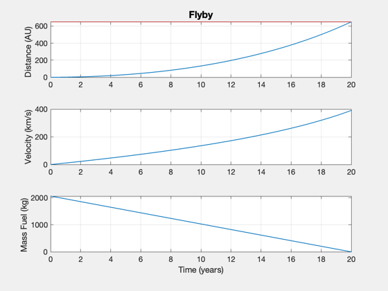
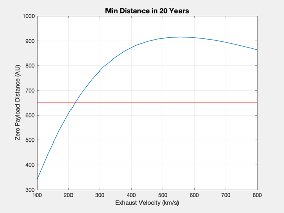
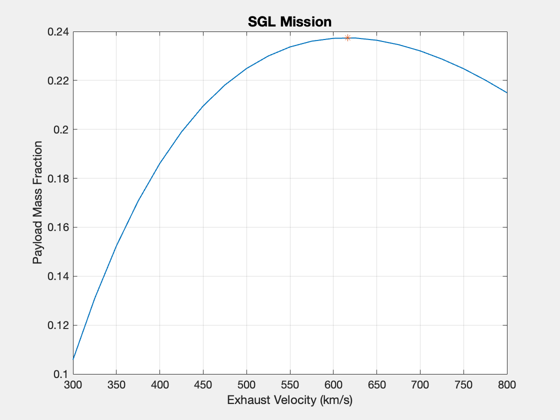

Contents
Generate preliminary spacecraft design for the SGL flyby mission.
The Solar Gravitational Lens mission requires reaching about 650 AU distance from the sun. This example compares a nominal exhaust velocity to the optimal exhaust velocity, which is twice as high. This is for a flyby; there is no deceleration phase.
See also: Straight2DStructure, FlybyReport, SimulateFlyby, FlybyOptimalImpulse, ZeroPayloadFlyby, SolveLambdaFlyby, Plot2D
%-------------------------------------------------------------------------- % Copyright (c) 2017 Princeton Satellite Systems, Inc. % All rights reserved. %-------------------------------------------------------------------------- % Constants AU = Constant('au'); YEAR = 365.25*86400; % Mission parameters mPay = 300; % kg nYears = 20; nAU = 650; % minimum distance (AU) % Propulsion system parameters uE = 300; % km/s eta = 0.4; % fusion power to thrust efficiency sigma = 1000; % W/kg f = 0.05; % structural fraction, kg/kg
Solve for the power
d = Straight2DStructure; d.uE = uE; d.f = f; d.sigma = sigma; d.eta = eta; d.mP = mPay; d.dF = nAU*AU; d.tF = nYears*YEAR; [s,data] = FlybyReport( mPay, d, true ); if 0 CreateLatexTable(s,'PointDesignSGL'); end
Report:
---- Flyby ----------- -- --
---- INPUTS ----- -- --
Final position 650.00 AU
Final time 20.00 yr
Mass payload 300.00 kg
---- ENGINE ----- -- --
Exhaust Velocity 300.00 km/s
Specific power 1000.00 kW/kg
Efficiency 0.40
---- OUTPUTS ----- -- --
Payload Mass Fraction 0.11 mP/m0
Payload Power Fraction 0.82 kg/kW
Final velocity 390.59 km/s
Fuel 2063.53 kg
Mass Total 2834.53 kg
Mass Engine 367.82 kg
Power 0.37 MW
Thrust 0.98 N
Numerical simulation and trajectory plot
SimulateFlyby(data ) subplot(3,1,1) hold on yy = axis; plot(yy(1:2),650*[1 1],'r') % print -depsc2 SGLTrajectory
Final position simulation 650.01 Distance (AU) Final velocity simulation 390.45 km/s Final time simulation 20.00 year
Optimal exhaust velocity
The optimal exhaust velocity maximises the payload fraction.
[uEOpt,lambda] = FlybyOptimalImpulse( d ); fprintf('Optimal exhaust velocity: %g km/s\n',uEOpt) fprintf('Max payload fraction: %g\n',lambda) uEs = linspace(100,800,21); lambdas = []; for k = 1:length(uEs) d.uE = uEs(k); dMins(k) = ZeroPayloadFlyby(d,d.tF); end Plot2D(uEs,dMins/AU,'Exhaust Velocity (km/s)','Zero Payload Distance (AU)',... sprintf('Min Distance in %g Years',nYears)) hold on yy = axis; plot(yy(1:2),nAU*[1 1],'r') uEs = linspace(300,800,21); lambdas = []; for k = 1:length(uEs) d.uE = uEs(k); lambdas(k) = SolveLambdaFlyby( d ); end Plot2D(uEs,lambdas,'Exhaust Velocity (km/s)','Payload Mass Fraction','SGL Mission') hold on plot(uEOpt,lambda,'*') d.uE = uEOpt; [s,data] = FlybyReport( mPay, d, true ); %-------------------------------------- % $Date$ % $Id: 3497060299ea50489ae51ddef3df4d3a7d914d71 $
Optimal exhaust velocity: 616.428 km/s
Max payload fraction: 0.237416
Report:
---- Flyby ----------- -- --
---- INPUTS ----- -- --
Final position 650.00 AU
Final time 20.00 yr
Mass payload 300.00 kg
---- ENGINE ----- -- --
Exhaust Velocity 616.43 km/s
Specific power 1000.00 kW/kg
Efficiency 0.40
---- OUTPUTS ----- -- --
Payload Mass Fraction 0.24 mP/m0
Payload Power Fraction 0.75 kg/kW
Final velocity 339.04 km/s
Fuel 534.58 kg
Mass Total 1263.60 kg
Mass Engine 402.30 kg
Power 0.40 MW
Thrust 0.52 N
 